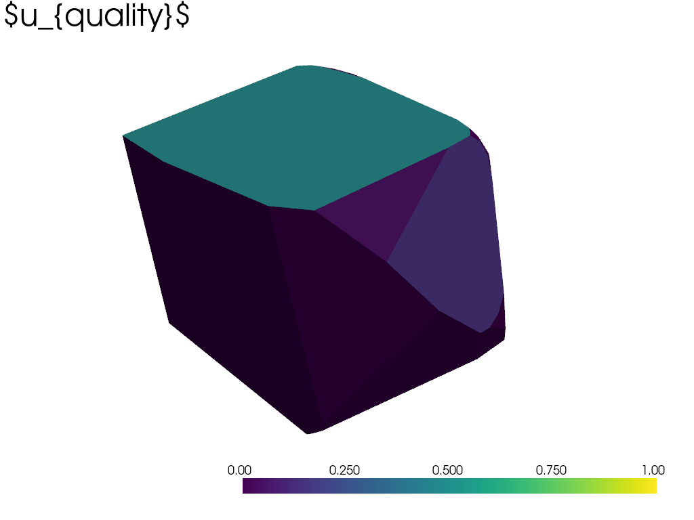
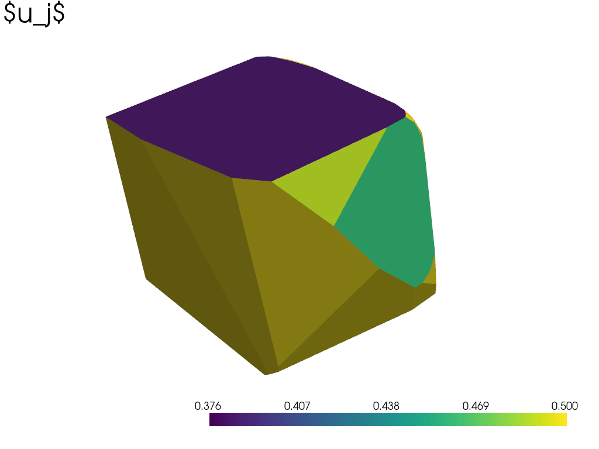

Note
Go to the end to download the full example code
Face Uncertainty#
More rigorously defining the uncertainty in the faces of an estimated object
Setting up the observation conditions
# isort: off
import matplotlib.pyplot as plt
import numpy as np
import vtk
import pyvista as pv
import mirage as mr
import mirage.vis as mrv
itensor = np.diag([1.0, 2.0, 3.0])
w0 = 9e-2 * mr.hat(np.array([[1.0, 2.0, 0.0]]))
idate = mr.utc(2023, 1, 1, 5)
obs_time = mr.hours(4)
obs_dt = mr.seconds(10)
obj_file = "collapsed_cube.obj"
station = mr.Station(preset="pogs")
brdf = mr.Brdf(name="phong", cd=0.5, cs=0.3, n=10)
obj = mr.SpaceObject(obj_file, identifier="goes 15")
dates, epsecs = mr.date_arange(idate, idate + obs_time, obs_dt, return_epsecs=True)
attitude = mr.RbtfAttitude(w0=w0, q0=np.array([[0.0, 0.0, 0.0, 1.0]]), itensor=itensor)
q_of_t, w_of_t = attitude.propagate(epsecs)
Model file collapsed_cube.obj not found in current model folder ('/Users/liamrobinson/Documents/PyLightCurves/mirage/resources/models'), checking model repository...
Attempting to download collapsed_cube.obj and its associated material file from the model repository...
Requesting: https://raw.githubusercontent.com/liamrobinson1/Light-Curve-Models/main//Non-Convex/collapsed_cube.obj
Requesting: https://raw.githubusercontent.com/liamrobinson1/Light-Curve-Models/main//Non-Convex/collapsed_cube.mtl
Model files were downloaded successfully!
Attempting to download spacelib.obj and its associated material file from the model repository...
Requesting: https://raw.githubusercontent.com/liamrobinson1/Light-Curve-Models/main//None
Model file spacelib.obj not found in the repository!
Requesting: https://raw.githubusercontent.com/liamrobinson1/Light-Curve-Models/main//accurate_sats/spacelib.mtl
Model files were downloaded successfully!
Computing the light curve
lc_ccd_signal_sampler, aux_data = station.observe_light_curve(
obj, attitude, brdf, dates, use_engine=False, model_scale_factor=1
)
World_Atlas_2015.zip: 0.00B [00:00, ?B/s]
World_Atlas_2015.zip: 0%| | 8.19k/684M [00:00<5:08:43, 36.9kB/s]
World_Atlas_2015.zip: 0%| | 2.88M/684M [00:00<01:00, 11.2MB/s]
World_Atlas_2015.zip: 1%| | 6.84M/684M [00:00<00:38, 17.7MB/s]
World_Atlas_2015.zip: 2%|1 | 12.2M/684M [00:00<00:23, 28.2MB/s]
World_Atlas_2015.zip: 3%|2 | 17.4M/684M [00:00<00:18, 35.3MB/s]
World_Atlas_2015.zip: 3%|3 | 22.9M/684M [00:00<00:16, 41.2MB/s]
World_Atlas_2015.zip: 4%|4 | 29.2M/684M [00:00<00:13, 47.2MB/s]
World_Atlas_2015.zip: 5%|4 | 31.0M/684M [00:01<00:17, 36.4MB/s]
World_Atlas_2015.zip: 5%|5 | 36.6M/684M [00:01<00:15, 41.7MB/s]
World_Atlas_2015.zip: 6%|6 | 42.0M/684M [00:01<00:14, 45.3MB/s]
World_Atlas_2015.zip: 7%|7 | 48.1M/684M [00:01<00:12, 49.8MB/s]
World_Atlas_2015.zip: 8%|7 | 54.5M/684M [00:01<00:11, 53.6MB/s]
World_Atlas_2015.zip: 8%|8 | 55.6M/684M [00:01<00:16, 39.1MB/s]
World_Atlas_2015.zip: 9%|8 | 60.9M/684M [00:01<00:14, 42.9MB/s]
World_Atlas_2015.zip: 10%|9 | 66.5M/684M [00:01<00:13, 46.8MB/s]
World_Atlas_2015.zip: 11%|# | 72.4M/684M [00:01<00:12, 50.4MB/s]
World_Atlas_2015.zip: 11%|#1 | 78.0M/684M [00:01<00:11, 51.9MB/s]
World_Atlas_2015.zip: 12%|#1 | 79.7M/684M [00:02<00:15, 38.8MB/s]
World_Atlas_2015.zip: 12%|#2 | 84.7M/684M [00:02<00:14, 41.8MB/s]
World_Atlas_2015.zip: 13%|#3 | 90.1M/684M [00:02<00:13, 45.4MB/s]
World_Atlas_2015.zip: 14%|#3 | 95.3M/684M [00:02<00:12, 47.2MB/s]
World_Atlas_2015.zip: 15%|#4 | 101M/684M [00:02<00:11, 50.8MB/s]
World_Atlas_2015.zip: 15%|#5 | 104M/684M [00:02<00:14, 40.8MB/s]
World_Atlas_2015.zip: 16%|#5 | 109M/684M [00:02<00:13, 43.5MB/s]
World_Atlas_2015.zip: 17%|#6 | 115M/684M [00:02<00:11, 47.5MB/s]
World_Atlas_2015.zip: 18%|#7 | 121M/684M [00:02<00:11, 50.2MB/s]
World_Atlas_2015.zip: 18%|#8 | 126M/684M [00:02<00:10, 51.5MB/s]
World_Atlas_2015.zip: 19%|#8 | 129M/684M [00:03<00:14, 37.4MB/s]
World_Atlas_2015.zip: 20%|#9 | 134M/684M [00:03<00:12, 42.8MB/s]
World_Atlas_2015.zip: 20%|## | 140M/684M [00:03<00:12, 45.2MB/s]
World_Atlas_2015.zip: 21%|##1 | 145M/684M [00:03<00:11, 46.6MB/s]
World_Atlas_2015.zip: 22%|##1 | 149M/684M [00:03<00:14, 37.0MB/s]
World_Atlas_2015.zip: 22%|##2 | 153M/684M [00:03<00:14, 36.9MB/s]
World_Atlas_2015.zip: 23%|##2 | 157M/684M [00:03<00:13, 38.4MB/s]
World_Atlas_2015.zip: 23%|##3 | 161M/684M [00:03<00:14, 37.4MB/s]
World_Atlas_2015.zip: 24%|##4 | 165M/684M [00:04<00:13, 38.8MB/s]
World_Atlas_2015.zip: 24%|##4 | 166M/684M [00:04<00:17, 29.4MB/s]
World_Atlas_2015.zip: 25%|##4 | 170M/684M [00:04<00:16, 31.6MB/s]
World_Atlas_2015.zip: 25%|##5 | 174M/684M [00:04<00:15, 33.9MB/s]
World_Atlas_2015.zip: 26%|##6 | 178M/684M [00:04<00:13, 36.6MB/s]
World_Atlas_2015.zip: 27%|##6 | 182M/684M [00:04<00:13, 36.4MB/s]
World_Atlas_2015.zip: 27%|##6 | 183M/684M [00:04<00:17, 28.4MB/s]
World_Atlas_2015.zip: 27%|##7 | 187M/684M [00:04<00:16, 30.7MB/s]
World_Atlas_2015.zip: 28%|##7 | 191M/684M [00:04<00:14, 34.0MB/s]
World_Atlas_2015.zip: 29%|##8 | 196M/684M [00:04<00:12, 39.6MB/s]
World_Atlas_2015.zip: 30%|##9 | 202M/684M [00:05<00:10, 43.9MB/s]
World_Atlas_2015.zip: 30%|##9 | 203M/684M [00:05<00:14, 32.9MB/s]
World_Atlas_2015.zip: 31%|### | 209M/684M [00:05<00:12, 39.0MB/s]
World_Atlas_2015.zip: 32%|###1 | 216M/684M [00:05<00:09, 47.3MB/s]
World_Atlas_2015.zip: 32%|###2 | 221M/684M [00:05<00:09, 48.0MB/s]
World_Atlas_2015.zip: 33%|###3 | 226M/684M [00:05<00:09, 49.3MB/s]
World_Atlas_2015.zip: 33%|###3 | 227M/684M [00:05<00:12, 36.8MB/s]
World_Atlas_2015.zip: 34%|###3 | 232M/684M [00:05<00:11, 40.3MB/s]
World_Atlas_2015.zip: 35%|###4 | 238M/684M [00:05<00:09, 44.7MB/s]
World_Atlas_2015.zip: 36%|###5 | 244M/684M [00:06<00:09, 48.8MB/s]
World_Atlas_2015.zip: 36%|###6 | 250M/684M [00:06<00:08, 51.4MB/s]
World_Atlas_2015.zip: 37%|###6 | 251M/684M [00:06<00:11, 37.7MB/s]
World_Atlas_2015.zip: 37%|###7 | 256M/684M [00:06<00:10, 41.3MB/s]
World_Atlas_2015.zip: 38%|###8 | 261M/684M [00:06<00:09, 44.4MB/s]
World_Atlas_2015.zip: 39%|###9 | 268M/684M [00:06<00:08, 50.3MB/s]
World_Atlas_2015.zip: 40%|###9 | 273M/684M [00:06<00:08, 50.5MB/s]
World_Atlas_2015.zip: 40%|#### | 275M/684M [00:06<00:10, 39.6MB/s]
World_Atlas_2015.zip: 41%|#### | 279M/684M [00:06<00:10, 39.6MB/s]
World_Atlas_2015.zip: 42%|####1 | 285M/684M [00:06<00:08, 45.3MB/s]
World_Atlas_2015.zip: 42%|####2 | 290M/684M [00:07<00:08, 48.0MB/s]
World_Atlas_2015.zip: 43%|####3 | 295M/684M [00:07<00:08, 48.0MB/s]
World_Atlas_2015.zip: 43%|####3 | 297M/684M [00:07<00:10, 37.9MB/s]
World_Atlas_2015.zip: 44%|####4 | 303M/684M [00:07<00:09, 41.6MB/s]
World_Atlas_2015.zip: 45%|####5 | 308M/684M [00:07<00:08, 45.9MB/s]
World_Atlas_2015.zip: 46%|####5 | 314M/684M [00:07<00:07, 47.7MB/s]
World_Atlas_2015.zip: 47%|####6 | 319M/684M [00:07<00:07, 50.4MB/s]
World_Atlas_2015.zip: 47%|####6 | 321M/684M [00:07<00:09, 39.0MB/s]
World_Atlas_2015.zip: 48%|####7 | 327M/684M [00:07<00:08, 43.1MB/s]
World_Atlas_2015.zip: 49%|####8 | 332M/684M [00:08<00:07, 47.0MB/s]
World_Atlas_2015.zip: 49%|####9 | 338M/684M [00:08<00:06, 49.9MB/s]
World_Atlas_2015.zip: 50%|##### | 343M/684M [00:08<00:06, 50.0MB/s]
World_Atlas_2015.zip: 50%|##### | 345M/684M [00:08<00:08, 37.8MB/s]
World_Atlas_2015.zip: 51%|#####1 | 349M/684M [00:08<00:08, 40.0MB/s]
World_Atlas_2015.zip: 52%|#####1 | 356M/684M [00:08<00:07, 45.5MB/s]
World_Atlas_2015.zip: 53%|#####2 | 362M/684M [00:08<00:06, 49.7MB/s]
World_Atlas_2015.zip: 54%|#####3 | 367M/684M [00:08<00:06, 51.9MB/s]
World_Atlas_2015.zip: 54%|#####3 | 369M/684M [00:08<00:07, 39.7MB/s]
World_Atlas_2015.zip: 55%|#####4 | 374M/684M [00:08<00:07, 43.6MB/s]
World_Atlas_2015.zip: 56%|#####5 | 380M/684M [00:09<00:06, 48.5MB/s]
World_Atlas_2015.zip: 56%|#####6 | 387M/684M [00:09<00:05, 52.0MB/s]
World_Atlas_2015.zip: 57%|#####7 | 391M/684M [00:09<00:05, 49.0MB/s]
World_Atlas_2015.zip: 57%|#####7 | 393M/684M [00:09<00:07, 38.6MB/s]
World_Atlas_2015.zip: 58%|#####8 | 399M/684M [00:09<00:06, 43.8MB/s]
World_Atlas_2015.zip: 59%|#####8 | 403M/684M [00:09<00:06, 44.5MB/s]
World_Atlas_2015.zip: 60%|#####9 | 409M/684M [00:09<00:05, 47.8MB/s]
World_Atlas_2015.zip: 61%|###### | 414M/684M [00:09<00:05, 49.4MB/s]
World_Atlas_2015.zip: 61%|###### | 416M/684M [00:09<00:07, 36.8MB/s]
World_Atlas_2015.zip: 61%|######1 | 420M/684M [00:10<00:06, 39.3MB/s]
World_Atlas_2015.zip: 62%|######2 | 426M/684M [00:10<00:05, 43.7MB/s]
World_Atlas_2015.zip: 63%|######2 | 431M/684M [00:10<00:05, 45.7MB/s]
World_Atlas_2015.zip: 64%|######3 | 437M/684M [00:10<00:04, 49.6MB/s]
World_Atlas_2015.zip: 64%|######4 | 439M/684M [00:10<00:06, 36.6MB/s]
World_Atlas_2015.zip: 65%|######4 | 443M/684M [00:10<00:06, 37.2MB/s]
World_Atlas_2015.zip: 65%|######5 | 447M/684M [00:10<00:06, 38.6MB/s]
World_Atlas_2015.zip: 66%|######5 | 451M/684M [00:10<00:06, 38.7MB/s]
World_Atlas_2015.zip: 67%|######6 | 456M/684M [00:10<00:05, 40.5MB/s]
World_Atlas_2015.zip: 67%|######6 | 456M/684M [00:10<00:07, 29.8MB/s]
World_Atlas_2015.zip: 67%|######7 | 461M/684M [00:11<00:06, 35.2MB/s]
World_Atlas_2015.zip: 68%|######8 | 466M/684M [00:11<00:05, 40.7MB/s]
World_Atlas_2015.zip: 69%|######8 | 472M/684M [00:11<00:04, 44.0MB/s]
World_Atlas_2015.zip: 70%|######9 | 477M/684M [00:11<00:04, 47.1MB/s]
World_Atlas_2015.zip: 70%|####### | 479M/684M [00:11<00:05, 37.1MB/s]
World_Atlas_2015.zip: 71%|####### | 483M/684M [00:11<00:05, 38.7MB/s]
World_Atlas_2015.zip: 71%|#######1 | 489M/684M [00:11<00:04, 42.3MB/s]
World_Atlas_2015.zip: 72%|#######2 | 494M/684M [00:11<00:04, 45.9MB/s]
World_Atlas_2015.zip: 73%|#######2 | 499M/684M [00:11<00:03, 48.0MB/s]
World_Atlas_2015.zip: 73%|#######3 | 501M/684M [00:12<00:05, 36.6MB/s]
World_Atlas_2015.zip: 74%|#######3 | 506M/684M [00:12<00:04, 41.0MB/s]
World_Atlas_2015.zip: 75%|#######4 | 511M/684M [00:12<00:03, 43.3MB/s]
World_Atlas_2015.zip: 76%|#######5 | 517M/684M [00:12<00:03, 47.1MB/s]
World_Atlas_2015.zip: 76%|#######6 | 522M/684M [00:12<00:03, 49.1MB/s]
World_Atlas_2015.zip: 77%|#######6 | 524M/684M [00:12<00:04, 36.8MB/s]
World_Atlas_2015.zip: 77%|#######7 | 529M/684M [00:12<00:03, 40.6MB/s]
World_Atlas_2015.zip: 78%|#######8 | 535M/684M [00:12<00:03, 45.8MB/s]
World_Atlas_2015.zip: 79%|#######8 | 539M/684M [00:12<00:03, 44.8MB/s]
World_Atlas_2015.zip: 80%|#######9 | 544M/684M [00:12<00:02, 46.7MB/s]
World_Atlas_2015.zip: 80%|#######9 | 546M/684M [00:13<00:03, 36.1MB/s]
World_Atlas_2015.zip: 81%|######## | 551M/684M [00:13<00:03, 39.9MB/s]
World_Atlas_2015.zip: 81%|########1 | 557M/684M [00:13<00:02, 43.1MB/s]
World_Atlas_2015.zip: 82%|########2 | 562M/684M [00:13<00:02, 45.8MB/s]
World_Atlas_2015.zip: 83%|########2 | 568M/684M [00:13<00:02, 49.4MB/s]
World_Atlas_2015.zip: 83%|########3 | 569M/684M [00:13<00:03, 37.2MB/s]
World_Atlas_2015.zip: 84%|########3 | 573M/684M [00:13<00:02, 39.5MB/s]
World_Atlas_2015.zip: 85%|########4 | 579M/684M [00:13<00:02, 42.8MB/s]
World_Atlas_2015.zip: 85%|########5 | 584M/684M [00:13<00:02, 45.6MB/s]
World_Atlas_2015.zip: 86%|########6 | 589M/684M [00:13<00:02, 47.0MB/s]
World_Atlas_2015.zip: 86%|########6 | 591M/684M [00:14<00:02, 35.7MB/s]
World_Atlas_2015.zip: 87%|########6 | 595M/684M [00:14<00:02, 37.6MB/s]
World_Atlas_2015.zip: 88%|########7 | 600M/684M [00:14<00:01, 42.8MB/s]
World_Atlas_2015.zip: 88%|########8 | 606M/684M [00:14<00:01, 45.4MB/s]
World_Atlas_2015.zip: 89%|########9 | 611M/684M [00:14<00:01, 47.3MB/s]
World_Atlas_2015.zip: 89%|########9 | 612M/684M [00:14<00:02, 35.8MB/s]
World_Atlas_2015.zip: 90%|######### | 617M/684M [00:14<00:01, 39.0MB/s]
World_Atlas_2015.zip: 91%|######### | 622M/684M [00:14<00:01, 41.7MB/s]
World_Atlas_2015.zip: 92%|#########1| 627M/684M [00:14<00:01, 43.8MB/s]
World_Atlas_2015.zip: 92%|#########2| 632M/684M [00:15<00:01, 45.6MB/s]
World_Atlas_2015.zip: 93%|#########2| 634M/684M [00:15<00:01, 35.1MB/s]
World_Atlas_2015.zip: 93%|#########3| 638M/684M [00:15<00:01, 36.5MB/s]
World_Atlas_2015.zip: 94%|#########3| 643M/684M [00:15<00:01, 41.1MB/s]
World_Atlas_2015.zip: 95%|#########4| 649M/684M [00:15<00:00, 44.7MB/s]
World_Atlas_2015.zip: 96%|#########5| 653M/684M [00:15<00:00, 45.6MB/s]
World_Atlas_2015.zip: 96%|#########5| 655M/684M [00:15<00:00, 35.5MB/s]
World_Atlas_2015.zip: 96%|#########6| 660M/684M [00:15<00:00, 38.2MB/s]
World_Atlas_2015.zip: 97%|#########7| 665M/684M [00:15<00:00, 41.0MB/s]
World_Atlas_2015.zip: 98%|#########7| 670M/684M [00:15<00:00, 45.9MB/s]
World_Atlas_2015.zip: 99%|#########8| 676M/684M [00:16<00:00, 48.0MB/s]
World_Atlas_2015.zip: 99%|#########8| 677M/684M [00:16<00:00, 36.7MB/s]
World_Atlas_2015.zip: 100%|#########9| 682M/684M [00:16<00:00, 39.9MB/s]
World_Atlas_2015.zip: 684MB [00:16, 41.9MB/s]
WARNING: no observation constraints assigned!
Inversion from the noisy light curve
sun_body = aux_data["sun_vector_object_body"]
obs_body = aux_data["observer_vector_object_body"]
lc_ccd_signal = lc_ccd_signal_sampler()
lc_noisy_irrad = lc_ccd_signal / (aux_data["sint"] * station.telescope.integration_time)
lc_noisy_unit_irrad = (
lc_noisy_irrad
* (aux_data["rmag_station_to_sat"] * 1e3) ** 2
/ mr.AstroConstants.sun_irradiance_vacuum
)
egi_opt_initial, egi_opt = mr.optimize_egi(
lc_noisy_unit_irrad[~lc_noisy_unit_irrad.mask],
sun_body[~lc_noisy_unit_irrad.mask, :],
obs_body[~lc_noisy_unit_irrad.mask, :],
brdf,
merge_iter=1,
merge_angle=np.pi / 6,
return_all=True,
num_candidates=1000,
)
rec_obj = mr.construct_mesh_from_egi(mr.close_egi(egi_opt))
Plotting the reconstructed and truth objects
pl = pv.Plotter(shape=(1, 2))
pl.subplot(0, 0)
mrv.render_spaceobject(pl, obj)
pl.subplot(0, 1)
mrv.render_spaceobject(pl, rec_obj)
pl.show()
Plotting the reflection matrix of the reconstructed object
G_rec = brdf.compute_reflection_matrix(
L=sun_body[~lc_noisy_unit_irrad.mask, :],
O=obs_body[~lc_noisy_unit_irrad.mask, :],
N=rec_obj.unique_normals,
)
is_g_full_rank = np.linalg.matrix_rank(G_rec) == G_rec.shape[1]
print(f"Is G full rank? {is_g_full_rank}")
plt.imshow(G_rec, aspect="auto", cmap="plasma")
mrv.texit(
"Reconstructed Object Reflection Matrix $G$",
"Normal index",
"Time index",
grid=False,
)
plt.clim([0, 1])
plt.colorbar(cax=mrv.get_cbar_ax(), label="Normalized irradiance per unit area")
plt.show()
Is G full rank? True
Plotting the expected normalized irradiance from each facet at each time
total_expected_norm_irrad = np.sum(G_rec * rec_obj.unique_areas, axis=0)
u_quantity = 1 - (total_expected_norm_irrad - np.min(total_expected_norm_irrad)) / (
np.max(total_expected_norm_irrad) - np.min(total_expected_norm_irrad)
)
plt.bar(np.arange(len(total_expected_norm_irrad)), total_expected_norm_irrad)
mrv.texit(
"Expected Normalized Irradiance $a_j\sum_{i}{G_{ij}}$",
"Normal index",
"Total normalized irradiance",
grid=False,
)
plt.show()
Plotting the light curve error at each timestep
if hasattr(obj, "file_name"):
delattr(obj, "file_name")
lc_rec = mr.run_light_curve_engine(
brdf,
obj,
sun_body[~lc_noisy_unit_irrad.mask, :],
obs_body[~lc_noisy_unit_irrad.mask, :],
)
lc_err = np.abs(lc_rec - lc_noisy_unit_irrad[~lc_noisy_unit_irrad.mask])
plt.figure(figsize=(7, 5))
plt.plot(epsecs[~lc_noisy_unit_irrad.mask], lc_err, c="k")
plt.xlabel("Epoch seconds")
plt.ylabel("Normalized irradiance [W/m$^2$]")
plt.legend(["Noisy", "Reconstructed"])
plt.tight_layout()
plt.show()
Attributing that light curve error to each face and plotting
total_err_per_face = np.sum(
lc_err.reshape(-1, 1) * (rec_obj.unique_areas * G_rec), axis=0
)
u_quality = (total_err_per_face - np.min(total_err_per_face)) / (
np.max(total_err_per_face) - np.min(total_err_per_face)
)
This has all been wrapped in a single function:
fu = mr.face_uncertainty(
rec_obj,
sun_body[~lc_noisy_unit_irrad.mask, :],
obs_body[~lc_noisy_unit_irrad.mask, :],
brdf,
lc_noisy_unit_irrad[~lc_noisy_unit_irrad.mask],
)
0 0
Plotting various uncertainties
pl = pv.Plotter()
mrv.render_spaceobject(pl, rec_obj, scalars=u_quantity[rec_obj.unique_to_all])
pl.add_text("$u_{quantity}$")
pl.show()
pl = pv.Plotter()
mrv.render_spaceobject(pl, rec_obj, scalars=u_quality[rec_obj.unique_to_all])
pl.add_text("$u_{quality}$")
pl.show()
pl = pv.Plotter()
mrv.render_spaceobject(pl, rec_obj, scalars=fu)
pl.add_text("$u_j$")
pl.show()
- 
- 
Total running time of the script: ( 0 minutes 38.624 seconds)